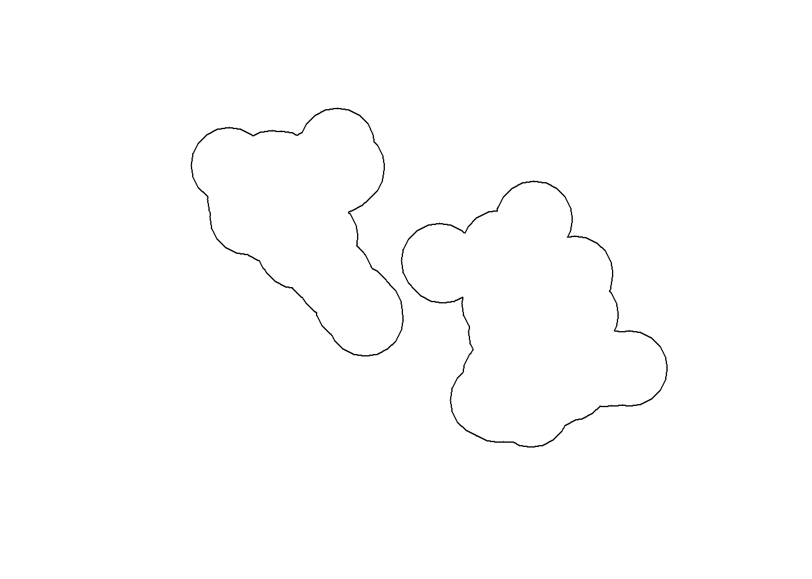

library(sf)
obs <- read.csv("data/observations.csv")
obs <- st_as_sf(obs, coords = c("x", "y"), crs = "EPSG:2056")9 Using QGIS via R
Sometimes you know how to do things in QGIS and you don’t have the time to search how to do it in R, or maybe QGIS is faster for a specific task. A recent R package called qgisprocess1 was developed for this reason. It gives access to the whole Processing toolbox available in QGIS. Of course you need to have QGIS installed as well. I will not go into the details of all the possibilities here but just show a quick example.
If you have multiple versions of QGIS installed, qgisprocess should find all of them and automatically use the most recent one.
library(qgisprocess)Attempting to load the package cache ... Success!
QGIS version: 3.40.2-Bratislava
Having access to 685 algorithms from 7 QGIS processing providers.
Run `qgis_configure(use_cached_data = TRUE)` to reload cache and get more details.
>>> Run `qgis_enable_plugins()` to enable 2 disabled plugins and access
their algorithms: cartography_tools, grassproviderYou can easily list all the available algorithms using the qgis_algorithms() function or search for a specific one using the qgis_search_algorithms() function. For example let’s compute a simple buffer around our sightings. The package will convert the sf object to a format understood by QGIS, then QGIS will compute the buffer and produce a GeoPackage with the output. We can then import it back to an sf object thanks to the st_as_sf() function. Recent versions of the package also support terra objects. If the output of the processing algorithm is a raster, you should thus use the qgis_as_terra() function instead of st_as_sf().
obs_buff_qgis_res <- qgis_run_algorithm("native:buffer",
INPUT = obs,
DISTANCE = 1000,
DISSOLVE = TRUE,
.quiet = TRUE)Argument `SEGMENTS` is unspecified (using QGIS default value).Using `END_CAP_STYLE = "Round"`Using `JOIN_STYLE = "Round"`Argument `MITER_LIMIT` is unspecified (using QGIS default value).Argument `SEPARATE_DISJOINT` is unspecified (using QGIS default value).Using `OUTPUT = qgis_tmp_vector()`obs_buff_qgis_res<Result of `qgis_run_algorithm("native:buffer", ...)`>
List of 1
$ OUTPUT: 'qgis_outputVector' chr "C:\\Users\\jgu\\AppData\\Local\\Temp\\RtmporXcXE\\file203074554d58\\file2030130040ed.gpkg"obs_buff_qgis <- st_as_sf(obs_buff_qgis_res, as_tibble = FALSE)
plot(st_geometry(obs_buff_qgis))
To check the name of the function parameters, you can access the QGIS help files via R using the qgis_show_help() function, or just display the parameters using the qgis_get_argument_specs() function.
qgis_get_argument_specs("native:buffer")# A tibble: 9 × 6
name description qgis_type default_value available_values acceptable_values
<chr> <chr> <chr> <list> <list> <list>
1 INPUT Input layer source <NULL> <NULL> <chr [1]>
2 DISTAN… Distance distance <int [1]> <NULL> <chr [3]>
3 SEGMEN… Segments number <int [1]> <NULL> <chr [3]>
4 END_CA… End cap st… enum <int [1]> <chr [3]> <chr [2]>
5 JOIN_S… Join style enum <int [1]> <chr [3]> <chr [2]>
6 MITER_… Miter limit number <int [1]> <NULL> <chr [3]>
7 DISSOL… Dissolve r… boolean <lgl [1]> <NULL> <chr [4]>
8 SEPARA… Keep disjo… boolean <lgl [1]> <NULL> <chr [4]>
9 OUTPUT Buffered sink <NULL> <NULL> <chr [1]> If you want to clean the temporary data that is created by qgisprocess, you can use the qgis_clean_result() function.
file.exists(qgis_extract_output(obs_buff_qgis_res))[1] TRUEqgis_clean_result(obs_buff_qgis_res)
file.exists(qgis_extract_output(obs_buff_qgis_res))[1] FALSE